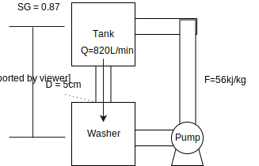

Cloth bag filters are used to remove particulate matter from the gases passing out through several process and boiler stacks in a large industrial plant. The bags become clogged and must be replaced frequently. Since they are quite expensive, rather than being discarded they are emptied, washed, and reused. In the washing process, a detergent solution with a specific gravity of 0.87 flows from a storage tank to a washing machine. The liquid effluent from the machine is pumped through a filter to remove dirt, and the cleaned detergent is recycled back to the storage tank.
Detergent flows from the storage tank to the washing machine by gravity feed at a rate of 820 L/min. All pipes in the line have 10.0-cm inner diameters. Friction losses are negligible in the line from the tank to the washing machine when the valve is fully opened, and \(\hat{F}\) 56 J/kg in the return line, which includes the pump and filter.
- Calculate the value of the height required to provide the desired flow rate of detergent into the washing machine when the valve is fully opened.
- Suppose the pump has an efficiency of 75%; that is, it delivers 75% of its rated value as shaft work. What must the rated value (kW) of the pump be to return 600 L/min of detergent to the storage tank?
Preamble:¶
This question may be found in the textbook with altered values. The textbook also contains a block flow diagram. We will also develop our own for situations where it is not given.
Draw a diagram of the process taking place and write the relevant equation:
We will probably need the energy equations:
\[H = Q - W\]Since the problem statement specified gravity and since height is asked for, a breakdown of kinetic and potential energy will be considered as well.
\[E_{tot} = E_{sys} = E_k + E_p + U\]Because we’re given a flowrate and an area, we can assume that we will need the volumetric flowrate Equation.
\[Q = A\cdot v\]Regardless if we use all the equations, it does not hurt to have them written out.
Add simplifications and assumptions
- We will assume there are no other factors affecting the energy of the system e.g \(U\)
- assume initial states in energy terms are zero eg \(E_{ki}= 0\)
- List the known values and solve the equation(s). note: all values are converted to SI units
\(v = \frac{Q}{A} = \frac{0.013667\frac{m^3}{s}} {.0019635m^2}=6.96\frac{m}{s}\) where A is the area in meters. Since we have found \(v\), We can now solve the energy balance. As energy is conserved and the assumption of zero as the initial state, we can simplify the energy equation to just \(E_k = E_p\). This breaks down into:
\[\frac{1}{2}mv^2 = mgh\]
At this point, it is ok to have thought of using the specific gravity, however; this is unecessary as the mass cancels out. Subbing in numbers and solving:
Part 2: List the known values and solve the equation(s). As we progressed through the problem, we realize we don’t need the first law equation. That is ok; as we solve more of the problem we quickly realize what is needed.
\[P_{req} = \dot{m}gh + \dot{m}\hat{F}\]
Conversely, it is now we need the Specific gravity
At 75% efficiency, this becomes
In [ ]: